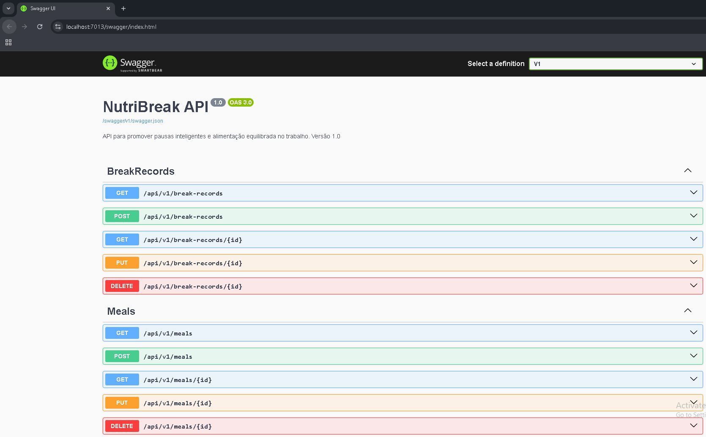
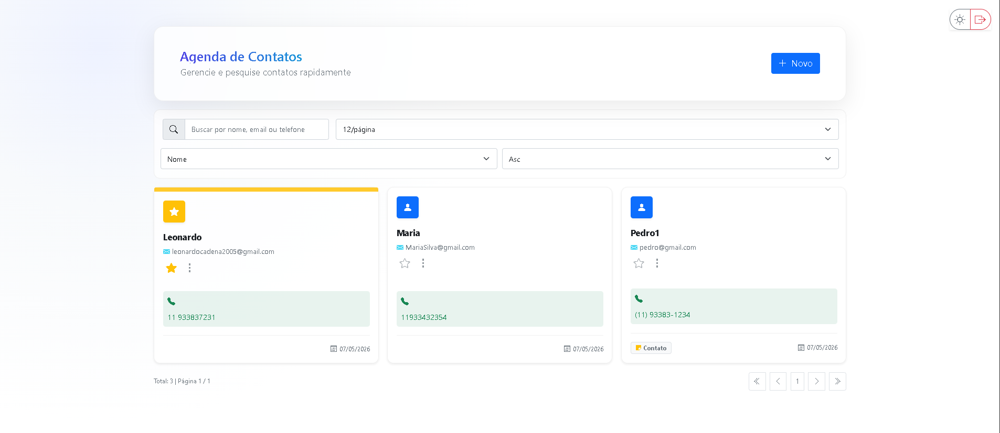
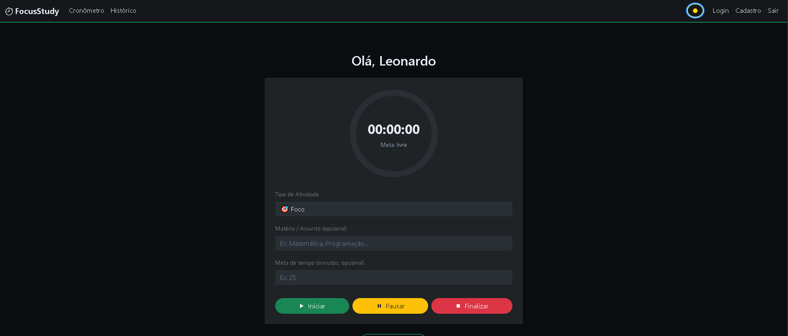

Meus Projetos

NutriBreak API
Plataforma para promover saúde física e mental no trabalho com pausas inteligentes e cardápios equilibrados. Inclui recomendações baseadas em humor e energia.

ContactBookIA
Aplicação web em .NET 8 para gerenciamento de contatos com interface moderna, autenticação JWT e isolamento de dados por usuário. SPA com modais, validação visual, toasts e dark/light mode.

FocusStudy
Aplicação ASP.NET Core para manter o foco: cronômetro com metas, histórico por usuário, badges de atividade e tema claro/escuro.

MaisAbrigo API
Sistema completo para gerenciamento de abrigos e pessoas resgatadas em emergências. Integra IoT com sensores de ocupação e temperatura, dashboard em tempo real e API REST para Defesa Civil.